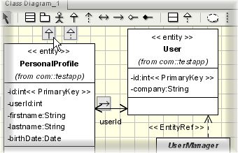

Create the UML class diagramJAG allows you to generate a J2EE application from the basis of a UML class diagram. There are many commercial and open-source products currently available that enable you to produce such diagrams; for example PoseidonUML has a freely-available 'community edition'. The only requirement for the UML modelling tool is that it can export the diagram in XMI format (a format that enables easy interchange of metadata between modeling tools). The components in the class diagram that are important to JAG are:
StereotypesJAG makes use of stereotypes to determine the roles of the various components in the UML class diagram. Stereotypes are basically reusable named tags that you can assign to individual components in the UML diagram, allowing for further differentiation between components.The following stereotypes must be adhered to for JAG to be able to read in the information correctly:
|
| Next step: Import the UML model into JAG |